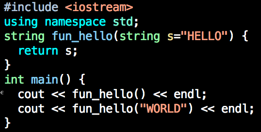

(1) In C++, default arguments are coded in the function definations.
(2) inline/constexpr functions: tell the compiler to expand the function
in line.
The cout part is compiled as
cout << (i > 0? "hello" : "world") << endl;
(3) assert(expr) will abort the program at runtime if expr==false.
Usually used as a quick debug.
(4) Turn off the debug mode:
#define NDEBUG before #include <cassert>
assert() will be ignored during compile.